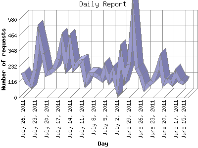

The Daily Report identifies the activity for each day within the reporting period. Remember that one page hit can result in several server requests as the images for each page are loaded.

| Day | Number of requests | Number of page requests | |
|---|---|---|---|
| 1. | June 15, 2011 | 106 | 17 |
| 2. | June 16, 2011 | 121 | 30 |
| 3. | June 17, 2011 | 179 | 33 |
| 4. | June 18, 2011 | 108 | 22 |
| 5. | June 19, 2011 | 127 | 31 |
| 6. | June 20, 2011 | 106 | 19 |
| 7. | June 21, 2011 | 273 | 31 |
| 8. | June 22, 2011 | 191 | 29 |
| 9. | June 23, 2011 | 121 | 24 |
| 10. | June 24, 2011 | 98 | 20 |
| 11. | June 25, 2011 | 68 | 30 |
| 12. | June 26, 2011 | 165 | 21 |
| 13. | June 27, 2011 | 222 | 29 |
| 14. | June 28, 2011 | 572 | 45 |
| 15. | June 29, 2011 | 246 | 31 |
| 16. | June 30, 2011 | 154 | 25 |
| 17. | July 1, 2011 | 303 | 34 |
| 18. | July 2, 2011 | 84 | 24 |
| 19. | July 3, 2011 | 196 | 25 |
| 20. | July 4, 2011 | 133 | 35 |
| 21. | July 5, 2011 | 217 | 26 |
| 22. | July 6, 2011 | 137 | 32 |
| 23. | July 7, 2011 | 157 | 26 |
| 24. | July 8, 2011 | 176 | 25 |
| 25. | July 9, 2011 | 175 | 26 |
| 26. | July 10, 2011 | 117 | 27 |
| 27. | July 11, 2011 | 268 | 36 |
| 28. | July 12, 2011 | 257 | 26 |
| 29. | July 13, 2011 | 219 | 34 |
| 30. | July 14, 2011 | 396 | 37 |
| 31. | July 15, 2011 | 255 | 30 |
| 32. | July 16, 2011 | 411 | 29 |
| 33. | July 17, 2011 | 285 | 37 |
| 34. | July 18, 2011 | 213 | 18 |
| 35. | July 19, 2011 | 187 | 38 |
| 36. | July 20, 2011 | 175 | 22 |
| 37. | July 21, 2011 | 327 | 38 |
| 38. | July 22, 2011 | 457 | 36 |
| 39. | July 23, 2011 | 205 | 43 |
| 40. | July 24, 2011 | 90 | 28 |
| 41. | July 25, 2011 | 117 | 29 |
| 42. | July 26, 2011 | 187 | 31 |
Most active day November 17, 2010 : 122 pages sent. 572 requests handled.
Daily average: 29 pages sent. 204 requests handled.
This report was generated on July 27, 2011 14:38.
Report time frame January 23, 2008 00:27 to July 26, 2011 23:30.
| Web statistics report produced by: analog 6.0 / Report Magic 2.21 |